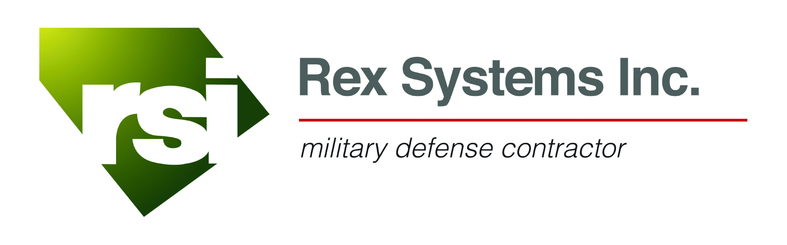
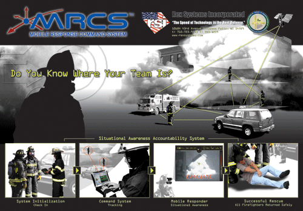
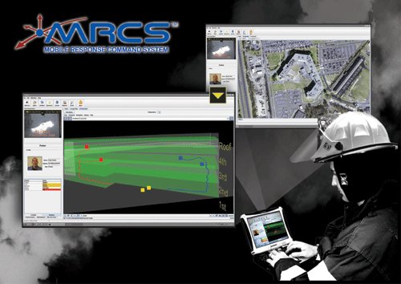
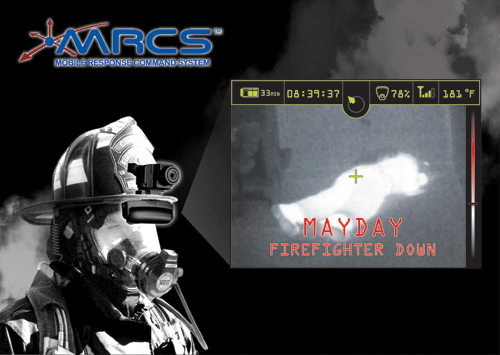

First Responder System
Vision
The operational challenges of September 11 regrettably identified the limitations of current situational
awareness technologies for First Responders. From those lessons learned, RSI envisioned the framework for
a new type of system to improve overall effectiveness and survivability.
We have researched, developed, and tested all relevant technologies for this endeavor and have succeeded with
a ‘System of Systems’ approach that blends the best of COTS (consumer of the shelf) with required specific
engineering developments. Our goal is simple; we want to harness the power of technology to save lives.

">

System Objectives
- Provide an effective tracking/positioning system that meets the needs of both military and civilian
urban First Responders.
- Provide the ability to track and locate any First Responder unit through position tracking detection/reporting
technologies.
- Develop rapid 3D structure replication to aid Incident Command with accountability.
- Provide for the capability to deliver situation awareness information.
- Develop a wearable Integrated Thermal Imager/Display with correct human factors for First Responders.
- Provide ad-hoc, mobile, wireless, digital networking technology and software based incident management.